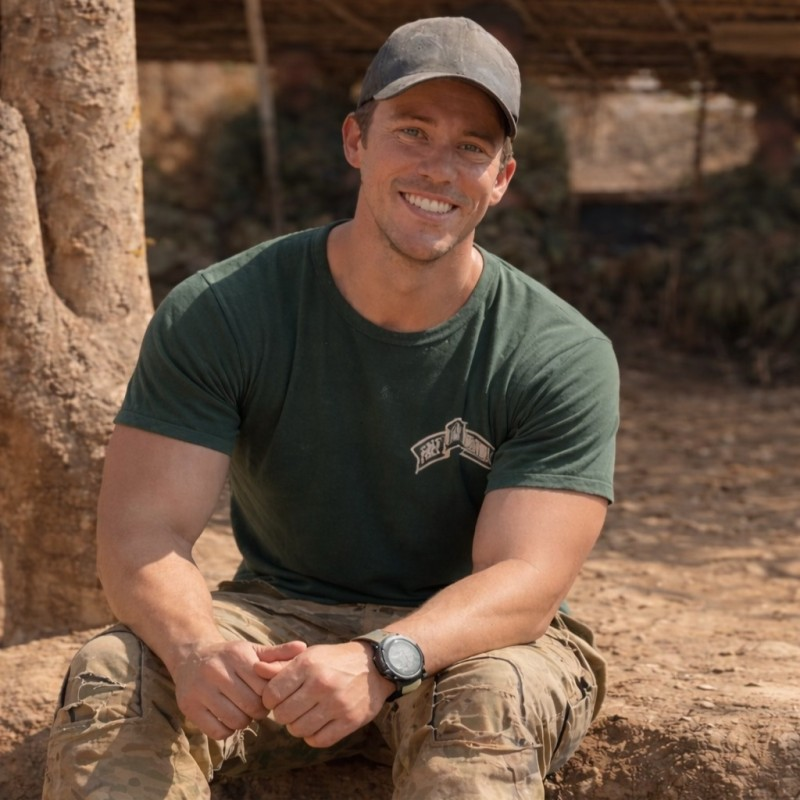

Kazu Yanagisawa
Author of this archive and a B.A. Economics candidate at UCLA. Kazu developed this project to preserve and contextualize testimony from Myanmar, pairing human-centered interpretation with digital archival methods.
This archive focuses on testimony emerging from the ongoing conflict and humanitarian crisis in Myanmar. Letters, personal accounts, and humanitarian media provide glimpses into everyday experiences of displacement, care, faith, and survival.
Rather than presenting these artifacts as neutral data, the archive treats them as forms of testimony. Each artifact is accompanied by interpretive notes that examine how language, emotion, and narrative structure communicate human experience.
The project also evaluates how artificial intelligence tools interact with these materials. OCR, transcription, translation, and sentiment analysis are tested to explore what machine methods can reveal—and what they fail to capture— about fragile human testimony.
Author of this archive and a B.A. Economics candidate at UCLA. Kazu developed this project to preserve and contextualize testimony from Myanmar, pairing human-centered interpretation with digital archival methods.

Free Burma Rangers volunteer and former U.S. Navy EOD technician. Jon served as a research source for this archive, contributing practical field insight on humanitarian response, demining, and conflict conditions.
Former Wounded Warrior trauma therapist and Free Burma Rangers volunteer. Rachel served as a research source for this archive, offering expertise on trauma care, recovery, and community support in conflict settings.